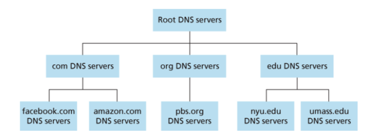
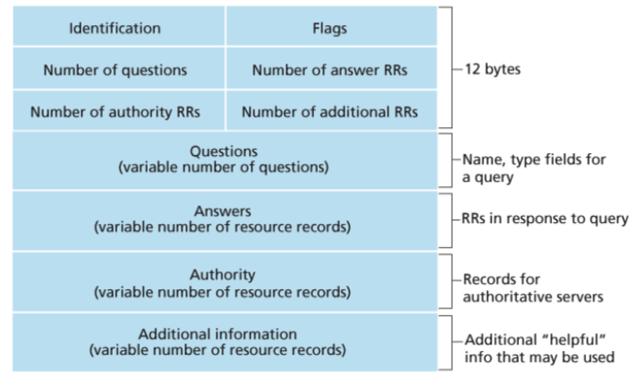
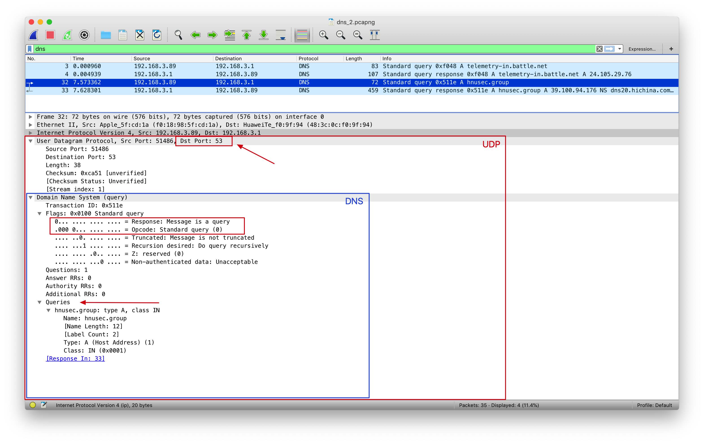
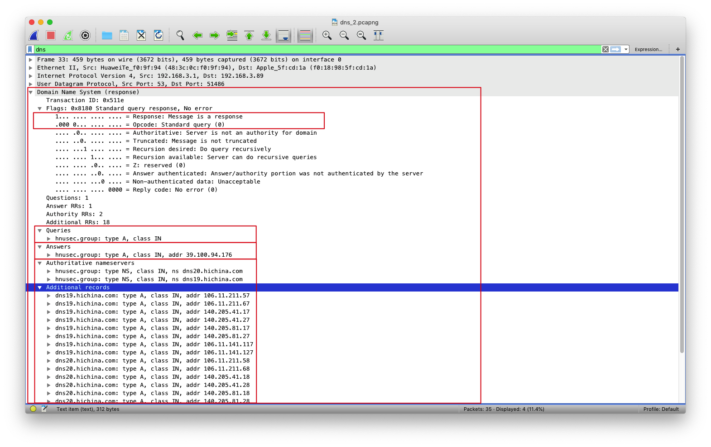

DNS
本文作者 @zww
DNS（DomainNameSystem）域名系统（服务）协议
它是应用层协议，主要用于域名与IP地址的相互转换，以及控制因特网的电子邮件的发送
因为在单一DNS服务器上运行集中式数据库完全没有可扩展能力。因此，DNS采用了分布式的设计方案
DNS部分层级结构 
DNS
大致说来，有3种类型的DNS服务器:
-
根DNS服务器
-
顶级域 (Top-Level Domain, TLD)DNS服务器
-
权威 DNS 服务器
DNS报文
DNS报文格式

比较重要的几个字段：
-
Flags
-
1 bit "query/response"：报文是查询报文(0)还是回答报文(1)
-
1 bit "Recursion desired"：该DNS服务器没有某记录时是否希望它执行递归查询
-
1 bit "Recursion available"：是否支持递归查询
-
-
Questions：包含正在进行的查询信息
-
Answers：包含对最初请求的名字的资源记录
-
Authority：包含其他权威服务器的记录
-
Additional information：包含其他有帮助的记录
DNS只有查询和回答报文两种，并且他们拥有 相同的格式
DNS Types
共同实现 DNS 分布式数据库的所有DNS服务器存储了资源记录 (Resource Record , RR) 资源记录是一个包含了下列字段的 4 元组: (Name, Value, Type, TTL)
-
如果 Type=A ，则Name是主机名，Value是该主机名对应的IP地址。因此，一条类型为A的资源记录提供了标准的主机名到F地址的映射。例如(relay1.bar.foo.com,145.37.93.126,A)就是一条类型A记录
-
如果 Type=NS ，则Name是个域(如foo.com)，而Value是个知道如何获得该域中主机E地址的权威DNS服务器的主机名。这个记录用于沿着查询链来路由DNS查询。例如(f00.com，dns.foo.com,NS)就是一条类型为闸的记录
-
如果 Type=CNAME ，则Value是别名为Name的主机对应的规范主机名。该记录能够向查询的主机提供一个主机名对应的规范主机名，例如(foo.com,CNAME)就是一条CNAME类型的记录
-
如果 Type=MX ，则Value是个别名为Name的邮件服务器的规范主机名。举例来说，(foo.com,mail.foo.com,MX)就是一条MX记录。MX记录允许邮件服务器主机名具有简单的别名。值得注意的是，通过使用MX记录，一个公司的邮件服务器和其他服务器(如它的Web服务器)可以使用相同的别名。为了获得邮件服务器的规范主机名，DNS客户应当请求一条MX记录;而为了获得其他服务器的规范主机名，DNS客户应当请求CNAME记录
Wireshark抓包
在抓取dns报文时，我们首先要清理一下本地的dns缓存
# mac
sudo killall -HUP mDNSResponder; sleep 2; echo macOS DNS Cache Reset | say
# windows
ipconfig /flushdns
查看本机ip及dns服务器
# mac
## 查看ip
ifconfig
## 查看dns服务器
cat /etc/resolv.conf
# windows
ipconfig \all
使用nslookup作为我们追踪dns的工具
nslookup hnusec.group
ip.addr == Your IP && dns
DNS查询报文

- Flags中第一位为0，表示query
- DNS协议运行在UDP之上，使用51486端口发送（这个可变），53号端口接受
- 查询报文由本机192.168.3.89发送给本地dns服务器192.168.3.1
- DNS查询报文中有Transaction ID：0x511e，Queries表明要查询的域名hnusec.group（Type A）
DNS回答报文

- Flags中第一位为1，表示response
- 53端口发送，51486号端口接受（与👆DNS查询报文相对应）
- Queries的内容与对应的查询报文中Queries是相同的（例如Transaction ID同为0x511e）
- Answers返回要查询的域名hnusec.group对应的类型（Type A)，IP地址（39.100.94.176）以及其他的一些参数
- Authoritative nameservers返回域名所对应的权威DNS服务器（dns19.hichina.com, dns20.hichina.com） 与域名解析中分配的DNS服务器是一致的
- Additional records会返回一些帮助信息，例如这里就返回了这些权威DNS服务器对应的IP地址（一个域名对应多个地址，参考DNS负载均衡）
在查看Answers中Name对应的16进制数据时，发现并不是hnusec.group，而是0xc00c，这是为什么呢
 RFC 1035中的4.1.4.Message compression则给出了这个问题的答案
RFC 1035中的4.1.4.Message compression则给出了这个问题的答案
In order to reduce the size of messages, the domain system utilizes a compression scheme which eliminates the repetition of domain names in a message. In this scheme, an entire domain name or a list of labels at the end of a domain name is replaced with a pointer to a prior occurance of the same name.
这里使用的是DNS协议消息压缩技术，使用偏移的指针来代替重复的字符串，格式如下
+--+--+--+--+--+--+--+--+--+--+--+--+--+--+--+--+
| 1 1| OFFSET |
+--+--+--+--+--+--+--+--+--+--+--+--+--+--+--+--+
最开始的两个bit必须都为1，紧接着14bit表示字符串在DNS报文中的偏移量（在这里就是"hnusec.group"）
由于DNS应答包中的Answers段出现的域名往往在Queries中已经出现，因此后面只需使用其偏移量表示即可。显然，Queries中的域名出现的频率最高，而其中第一个出现的域名偏移量固定为12字节（00001100），加上最开始的两个1，那二进制就是
+--+--+--+--+--+--+--+--+--+--+--+--+--+--+--+--+
| 1 1 | 0 0 0 0 0 0 0 0 0 0 1 1 0 0|
+--+--+--+--+--+--+--+--+--+--+--+--+--+--+--+--+
如果需要指定dns-server，则可以使用下面的命令形式
# nslookup domain [dns-server]
nslookup www.aiit.or.kr bitsy.mit.edu
接着使用获取到的bitsy.mit.edu的ip地址作为dns服务器进行查询（第42条已经将18.0.72.3作为目的地）
最后返回www.aiit.or.kr对于的ip地址
参考链接
-
Computer Networking - A Top Down Approach, 7th, converted